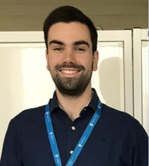

Duarte Cecílio - Resume

Contacts
Hobbies
Summary
I am a driven chemical engineer and researcher with a PhD in
chemical engineering, advanced technical knowledge and
experience in integrating multidisciplinary research projects. I
have significant experience in advanced mathematical and
computational modelling of industrial processes. I occupy my
current position as R&D Engineer at the Secil Outão cement
production plant in the context of the Clean Cement Line
project, aiming to improve energy efficiency and minimize the
environmental impact of the plant's clinker production line 9. To
that end, I develop my work as part of the CCL R&D team,
implementing software models for production process
optimization including hydrogen combustion, pulsed combustion
and digitalization, including machine/deep learning algorithms
for predictive control & maintenance, as well as computational
fluid dynamics models to develop a digital twin of the clinker
kiln.
Skills
Technical Skills
Programming Languages
Programming Tools/Frameworks
Specialized software
- Aspen Plus, Hysys and Custom Modeler
- Ansys Fluent and Spaceclaim
- Microsoft PowerBI
Language Skills
- Portuguese - Native Speaker
- English - Fluent
- French - Fluent
- Spanish - Fluent
- German - A1 Level
- Japanese - A1 Level
Work Experience
- 07/2021 - Present: R&D Engineer at Secil - Clean Cement Line | Setúbal, Portugal
- Developing solutions for production process optimization
including hydrogen combustion, pulsed combustion and
digitalization, namely machine learning algorithms for
predictive control & maintenance, as well as
computational fluid dynamics to develop a digital twin of a
cement kiln.
- 04/2023 - 07/2023: Invited Assistant Professor at Instituto Superior Técnico | Lisbon, Portugal
- Teaching introductory class on Computational Fluid Dynamics to the students of the Chemical Engineering Masters.
- 07/2020 - 06/2021: Invited Teaching Assistant at Instituto Superior Técnico | Lisbon, Portugal
- Assisted the chemical engineering department with the
teaching infrastructure adaptation due to the pandemic
context.
- 02/2016 - 01/2021: PhD Student at Instituto Superior Técnico | Lisbon, Portugal
- Developed heterogeneous catalysts towards the
polymerization of ethylene and high-performance
polyethylene nanocomposites.
- 03/2015 - 07/2015: Academic Intern at Laboratory for the Chemistry and Processes of Polymerization | Lyon, France
- Developed mathematical models for ethylene
polymerization reactors in slurry and gas phases in the
context of my MSc thesis.
Education
- 2016 - 2021: PhD in Chemical Engineering, specialization in Catalysis and Sustainability
- Instituto Superior Técnico, Universidade de Lisboa
Passed with Distinction
- 2016 - 2019: Advanced Studies Diploma in Chemical Engineering
- Instituto Superior Técnico, Universidade de Lisboa. Average grade: 18/20
- 2009 - 2015: Masters Degree in Chemical Engineering
- Instituto Superior Técnico, Universidade de Lisboa. Average grade: 14/20
Accomplishments
- Deployed several ML/DL models implementing Recursive Neural Networks in real-time for timeseries forecasting.
- Implemented different methodologies for advanced automated data analysis.
- Developed a digital twin of a cement rotary kiln
- Published 8 scientific papers.
- Supervised more than 5 Masters students.